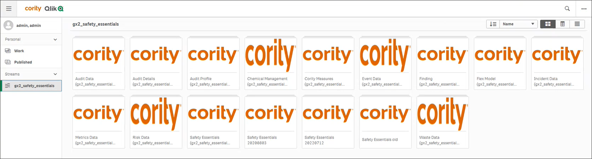
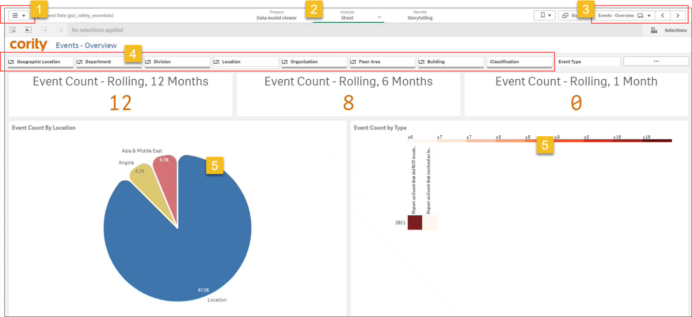

When you open CorAnalytics from the Business Intelligence cloud menu you will see the app menu on the left side. If you are an Admin/Creator user, you will see a Personal section that displays apps you have created. These will be in the Work subsection unless you choose to Publish them for other users to view. The Streams section displays the apps that are available to all users by default; in the example below, the gx2_qlik stream is selected and the apps are displayed to the right. The stream name will vary by client.

Click on an app to open the data visualization(s), wherever applicable.

1 There may be multiple sheets available, e.g. a Welcome landing page with overview results, one or more sheets of visualizations, etc. Choose App Overview in the top left menu to see what sheets exist and the last date/time the data was loaded (data is refreshed every 60 minutes). Choose Open Hub to return to the main app view.
2 These tabs control the type of view:
3 Use the controls at the top right to navigate among the available sheets.
4 Above the sheet data (and below the title) you will see all available filters that you can apply to the data. In the example above, there are filters for the GDDLOFB and Classification. If there is no data for a particular filter (e.g. if there are not multiple Divisions to choose from), the filter will be greyed out; similarly, if a particular filter option has no data, it will be greyed out (e.g. the Division filter has Div A, Div B, and Div C but there is no data in Div B, Div B will be greyed out).
If you select a filter, the subsequent filters to its right are filtered based on your selection. For example, if you filter Location to be “Cambridge”, the Organization, Floor Area, Building, and Classification filters will only offer options that apply to that location.
5 You can click in the charts to drill down on a particular data element.